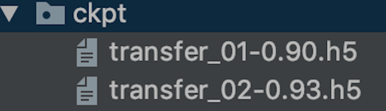

4.6 TF常用功能模块¶
学习目标¶
- 目标
- 掌握Checkpoint使用
- 掌握TensorBoard使用
- 掌握data模块使用
- 掌握ImageDataGenerator的使用
- 应用
- 无
4.6.1 fit的callbacks详解¶
回调是在训练过程的给定阶段应用的一组函数。可以使用回调来获取培训期间内部状态和模型统计信息的视图。您可以将回调列表（作为关键字参数callbacks）传递给或类的fit()方法。然后将在训练的每个阶段调用回调的相关方法。
- 定制化保存模型
- 保存events文件
4.6.1.1 ModelCheckpoint¶
from tensorflow.python.keras.callbacks import ModelCheckpoint
- keras.callbacks.ModelCheckpoint(filepath, monitor='val_loss', save_best_only=False, save_weights_only=False, mode='auto', period=1)
- Save the model after every epoch：每隔多少次迭代保存模型
- filepath: 保存模型字符串
- 如果设置 weights.{epoch:02d}-{val_loss:.2f}.hdf5格式，将会每隔epoch number数量并且将验证集的损失保存在该位置
- 如果设置weights.{epoch:02d}-{val_acc:.2f}.hdf5，将会按照val_acc的值进行保存模型
- monitor: quantity to monitor.设置为'val_acc'或者'val_loss'
- save_best_only: if save_best_only=True, 只保留比上次模型更好的结果
- save_weights_only: if True, 只保存去那种(model.save_weights(filepath)), else the full model is saved (model.save(filepath)).
- mode: one of {auto, min, max}. 如果save_best_only=True, 对于val_acc, 要设置max, 对于val_loss要设置min
- period: 迭代保存checkpoints的间隔
check = ModelCheckpoint('./ckpt/singlenn_{epoch:02d}-{val_acc:.2f}.h5',
monitor='val_acc',
save_best_only=True,
save_weights_only=True,
mode='auto',
period=1)
SingleNN.model.fit(self.train, self.train_label, epochs=5, callbacks=[check], validation_data=(x, y))
注意：
1、使用ModelCheckpoint一定要在fit当中指定验证集才能使用，否则报错误。
2、其中val_acc还是val_accuracy需要在这里指定
model.compile(optimizer=tf.keras.optimizers.Adam(),
loss=tf.keras.losses.sparse_categorical_crossentropy,
metrics=['accuracy'])
model.compile(optimizer=tf.keras.optimizers.Adam(),
loss=tf.keras.losses.sparse_categorical_crossentropy,
metrics=['acc'])
4.6.1.2 Tensorboard¶
- 添加Tensorboard观察损失等情况
- keras.callbacks.TensorBoard(log_dir='./logs', histogram_freq=0, batch_size=32, write_graph=True, write_grads=False, write_images=False, embeddings_freq=0, embeddings_layer_names=None, embeddings_metadata=None, embeddings_data=None, update_freq='epoch')
- log_dir:保存事件文件目录
- write_graph=True：是否显示图结构
- write_images=False：是否显示图片
- write_grads=True:是否显示梯度
histogram_freq必须大于0
# 添加tensoboard观察
tensorboard = keras.callbacks.TensorBoard(log_dir='./graph', histogram_freq=1,
write_graph=True, write_images=True)
SingleNN.model.fit(self.train, self.train_label, epochs=5, callbacks=[tensorboard])
- 打开终端查看：
# 指定存在文件的目录，打开下面命令
tensorboard --logdir="./"
这是CNN mnist100案例中的效果：
- 1、损失和准确率

- 2、图结构显示：
- 3、权重参数显示

4.6.2 tf.data ：数据集的构建与预处理¶
- 问题引入：
在大部分时候，我们希望使用自己的数据集来训练模型。然而，面对一堆格式不一的原始数据文件，将其预处理并读入程序的过程往往十分繁琐，甚至比模型的设计还要耗费精力。比如，为了读入一批图像文件，我们可能需要纠结于 python 的各种图像处理包（比如 pillow ），自己设计 Batch 的生成方式，最后还可能在运行的效率上不尽如人意。为此，TensorFlow 提供了 tf.data 这一模块，包括了一套灵活的数据集构建 API，能够帮助我们快速、高效地构建数据输入的流水线，尤其适用于数据量巨大的场景。
4.6.2.1 数据集对象的建立¶
- tf.data 的核心是 tf.data.Dataset 类，提供了对数据集的高层封装。
- **tf.data.Dataset 由一系列的可迭代访问的元素（element）组成，每个元素包含一个或多个张量。**比如说，对于一个由图像组成的数据集，每个元素可以是一个形状为 长×宽×通道数 的图片张量，也可以是由图片张量和图片标签张量组成的元组（Tuple）。
1、tf.data.Dataset.from_tensor_slices()¶
最基础的建立 tf.data.Dataset 的方法是使用 tf.data.Dataset.from_tensor_slices() ，适用于数据量较小（能够整个装进内存）的情况。
import tensorflow as tf
import numpy as np
X = tf.constant([2015, 2016, 2017, 2018, 2019])
Y = tf.constant([12000, 14000, 15000, 16500, 17500])
# 也可以使用NumPy数组，效果相同
# X = np.array([2015, 2016, 2017, 2018, 2019])
# Y = np.array([12000, 14000, 15000, 16500, 17500])
dataset = tf.data.Dataset.from_tensor_slices((X, Y))
for x, y in dataset:
print(x.numpy(), y.numpy())
输出
2013 12000
2014 14000
2015 15000
2016 16500
2017 17500
同样类似地，我们可以载入前章的 MNIST 数据集：
import matplotlib.pyplot as plt
(train_data, train_label), (_, _) = tf.keras.datasets.mnist.load_data()
# [60000, 28, 28, 1]
train_data = np.expand_dims(train_data.astype(np.float32) / 255.0, axis=-1)
mnist_dataset = tf.data.Dataset.from_tensor_slices((train_data, train_label))
for image, label in mnist_dataset:
print(label.numpy())
print(image.numpy())
4.6.2.2 数据集对象的预处理¶
tf.data.Dataset 类为我们提供了多种数据集预处理方法。最常用的如：
- 1、Dataset.map(f) ：
- 对数据集中的每个元素应用函数 f ，得到一个新的数据集（这部分往往结合 tf.io 进行读写和解码文件， tf.image 进行图像处理）；
- 2、Dataset.shuffle(buffer_size) ：
- 将数据集打乱（设定一个固定大小的缓冲区（Buffer），取出前 buffer_size 个元素放入，并从缓冲区中随机采样，采样后的数据用后续数据替换）；
- 3、Dataset.batch(batch_size) ：
- 将数据集分成批次，即对每 batch_size 个元素，使用 tf.stack() 在第 0 维合并，成为一个元素。
- 4、Dataset.prefetch() ：
-
预取出数据集中的若干个元素
-
5、除此以外，还有 Dataset.repeat() （重复数据集的元素）、 Dataset.reduce() （与 Map 相对的聚合操作）、 Dataset.take ()等，可参考 API 文档 进一步了解。
4.6.4.3 使用案例¶
1、使用 Dataset.map() 将所有图片旋转 90 度：
def rot90(image, label):
image = tf.image.rot90(image)
return image, label
mnist_dataset = mnist_dataset.map(rot90)
for image, label in mnist_dataset:
plt.title(label.numpy())
plt.imshow(image.numpy()[:, :, 0])
plt.show()
2、使用 Dataset.batch() 将数据集划分批次，每个批次的大小为 4：
# 获取批次数据
mnist_dataset = mnist_dataset.batch(4)
for images, labels in mnist_dataset:
fig, axs = plt.subplots(1, 4)
for i in range(4):
axs[i].set_title(labels.numpy()[i])
axs[i].imshow(images.numpy()[i, :, :, 0])
plt.show()
3、使用 Dataset.shuffle() 将数据打散后再设置批次，缓存大小设置为 10000
- 设定一个固定大小为 buffer_size 的缓冲区（Buffer）；初始化时，取出数据集中的前 buffer_size 个元素放入缓冲区；
- 每次需要从数据集中取元素时，即从缓冲区中随机采样一个元素并取出，然后从后续的元素中取出一个放回到之前被取出的位置，以维持缓冲区的大小。
mnist_dataset = mnist_dataset.shuffle(buffer_size=10000).batch(4)
for images, labels in mnist_dataset:
fig, axs = plt.subplots(1, 4)
for i in range(4):
axs[i].set_title(labels.numpy()[i])
axs[i].imshow(images.numpy()[i, :, :, 0])
plt.show()
注：Dataset.shuffle() 时缓冲区大小 buffer_size 的设置，每次的数据都会被随机打散。当 buffer_size 设置为 1 时，其实等价于没有进行任何打散。
- 当数据集的标签顺序分布极为不均匀（例如二元分类时数据集前 N 个的标签为 0，后 N 个的标签为 1）时，较小的缓冲区大小会使得训练时取出的 Batch 数据很可能全为同一标签，从而影响训练效果。一般而言，数据集的顺序分布若较为随机，则缓冲区的大小可较小，否则则需要设置较大的缓冲区。
4.6.4.3 数据集元素的获取与使用¶
1、构建好数据并预处理后，我们需要从其中迭代获取数据以用于训练。tf.data.Dataset 是一个 Python 的可迭代对象，因此可以使用 For 循环迭代获取数据，即：
dataset = tf.data.Dataset.from_tensor_slices((A, B, C, ...))
for a, b, c, ... in dataset:
# 对张量a, b, c等进行操作，例如送入模型进行训练
2、可以使用 iter() 显式创建一个 Python 迭代器并使用 next() 获取下一个元素，即：
dataset = tf.data.Dataset.from_tensor_slices((A, B, C, ...))
it = iter(dataset)
a_0, b_0, c_0, ... = next(it)
a_1, b_1, c_1, ... = next(it)
3、Keras 支持使用 tf.data.Dataset 直接作为输入。当调用 tf.keras.Model 的 fit() 和 evaluate() 方法时，可以将参数中的输入数据 x 指定为一个元素格式为 (输入数据, 标签数据) 的 Dataset ，并忽略掉参数中的标签数据 y 。例如，对于上述的 MNIST 数据集，常规的 Keras 训练方式是：
model.fit(x=train_data, y=train_label, epochs=num_epochs, batch_size=batch_size)
使用 tf.data.Dataset 后，我们可以直接传入 Dataset ：
model.fit(mnist_dataset, epochs=num_epochs)
如果已经通过 Dataset.batch() 方法划分了数据集的批次，所以这里fit中也无需提供批次的大小。
4.6.4.4 使用tf.data的并行化策略提高训练流程效率¶
当训练模型时，我们希望充分利用计算资源，减少 CPU/GPU 的空载时间。然而有时，数据集的准备处理非常耗时，使得我们在每进行一次训练前都需要花费大量的时间准备待训练的数据，而此时 GPU 只能空载而等待数据，造成了计算资源的浪费。
tf.data 的数据集对象为我们提供了 Dataset.prefetch() 方法，使得我们可以让数据集对象 Dataset 在训练时预取出若干个元素，使得在 GPU 训练的同时 CPU 可以准备数据，从而提升训练流程的效率

使用：
mnist_dataset = mnist_dataset.prefetch(buffer_size=tf.data.experimental.AUTOTUNE)
-
参数 buffer_size 既可手工设置，也可设置为 tf.data.experimental.AUTOTUNE 从而由 TensorFlow 自动选择合适的数值。
-
2、还有一种方式也能够提高利用CPU资源
- Dataset.map() 也可以利用多 GPU 资源，并行化地对数据项进行变换，从而提高效率。
通过设置 Dataset.map() 的 num_parallel_calls 参数实现数据转换的并行化。上面的是未并行化的图示，下面是两核并行的图示，时间会缩小
# 添加参数使用，num_parallel_calls 设置为 tf.data.experimental.AUTOTUNE 以让 TensorFlow 自动选择合适的数值
train_dataset = train_dataset.map(
map_func=_decode_and_resize,
num_parallel_calls=tf.data.experimental.AUTOTUNE)
通过 prefetch() 的使用和在 map() 过程中加入 num_parallel_calls 参数，模型训练的时间可缩减至原来的一半甚至更低。
注：纵轴为每 epoch 训练所需时间，单位：秒
4.6.5 案例：实现猫狗图像分类¶
数据集来自 kaggle 上的一个竞赛：Dogs vs. Cats，训练集有25000张，猫狗各占一半。测试集12500张，没有标定是猫还是狗。
- 目的：猫狗图片二分类任务为示例
- 使用 tf.data 结合 tf.io 和 tf.image 建立Dataset 数据集
- 数据集可取这里下载：https://www.floydhub.com/fastai/datasets/cats-vs-dogs
- 步骤：
- 1、数据集的获取和构建
- 2、模型构建和封装
- 3、训练以及测试过程实现
1、数据集的获取和构建
class CatOrDog(object):
"""猫狗分类
"""
num_epochs = 1
batch_size = 32
learning_rate = 0.001
# 训练目录
train_cats_dir = '/root/cv_project/tf_example/cats_vs_dogs/train/cats/'
train_dogs_dir = '/root/cv_project/tf_example/cats_vs_dogs/train/dogs/'
# 验证目录
test_cats_dir = '/root/cv_project/tf_example/cats_vs_dogs/valid/cats/'
test_dogs_dir = '/root/cv_project/tf_example/cats_vs_dogs/valid/dogs/'
def __init__(self):
# 1、读取训练集的猫狗文件
self.train_cat_filenames = tf.constant([CatOrDog.train_cats_dir + filename
for filename in os.listdir(CatOrDog.train_cats_dir)])
self.train_dog_filenames = tf.constant([CatOrDog.train_dogs_dir + filename
for filename in os.listdir(CatOrDog.train_dogs_dir)])
# 2、猫狗文件列表合并，并且初始化猫狗的目标值，0为猫，1为狗
self.train_filenames = tf.concat([self.train_cat_filenames, self.train_dog_filenames], axis=-1)
self.train_labels = tf.concat([
tf.zeros(self.train_cat_filenames.shape, dtype=tf.int32),
tf.ones(self.train_dog_filenames.shape, dtype=tf.int32)],
axis=-1)
定义数据的获取方法，通过tf.data指定
def get_batch(self):
"""获取dataset批次数据
:return:
"""
train_dataset = tf.data.Dataset.from_tensor_slices((self.train_filenames, self.train_labels))
# 进行数据的map, 随机，批次和预存储
train_dataset = train_dataset.map(
map_func=_decode_and_resize,
num_parallel_calls=tf.data.experimental.AUTOTUNE)
train_dataset = train_dataset.shuffle(buffer_size=20000)
train_dataset = train_dataset.batch(CatOrDog.batch_size)
train_dataset = train_dataset.prefetch(tf.data.experimental.AUTOTUNE)
return train_dataset
# 图片处理函数，读取，解码并且进行输入形状修改
def _decode_and_resize(filename, label):
image_string = tf.io.read_file(filename)
image_decoded = tf.image.decode_jpeg(image_string)
image_resized = tf.image.resize(image_decoded, [256, 256]) / 255.0
return image_resized, label
2、模型构建和封装
通过构造两层卷积+两个全连接层的网络
self.model = tf.keras.Sequential([
tf.keras.layers.Conv2D(32, 3, activation='relu', input_shape=(256, 256, 3)),
tf.keras.layers.MaxPooling2D(),
tf.keras.layers.Conv2D(32, 5, activation='relu'),
tf.keras.layers.MaxPooling2D(),
tf.keras.layers.Flatten(),
tf.keras.layers.Dense(64, activation='relu'),
tf.keras.layers.Dense(2, activation='softmax')
])
3、训练以及测试过程实现
模型训练过程,这里就免去指定ckpt以及tensorboard的callbacks了，可以自己去指定实验
def train(self, train_dataset):
"""训练过程
:return:
"""
self.model.compile(
optimizer=tf.keras.optimizers.Adam(learning_rate=CatOrDog.learning_rate),
loss=tf.keras.losses.sparse_categorical_crossentropy,
metrics=[tf.keras.metrics.sparse_categorical_accuracy]
)
self.model.fit(train_dataset, epochs=CatOrDog.num_epochs)
self.model.save_weights("./ckpt/cat_or_dogs.h5")
测试过程
- 1、需要提供一个读取测试数据及的dataset数据集
- 2、进行model的预测，可以先进行模型保存之后，再次读取进行预测
def test(self):
# 1、构建测试数据集
test_cat_filenames = tf.constant([CatOrDog.test_cats_dir + filename
for filename in os.listdir(CatOrDog.test_cats_dir)])
test_dog_filenames = tf.constant([CatOrDog.test_dogs_dir + filename
for filename in os.listdir(CatOrDog.test_dogs_dir)])
test_filenames = tf.concat([test_cat_filenames, test_dog_filenames], axis=-1)
test_labels = tf.concat([
tf.zeros(test_cat_filenames.shape, dtype=tf.int32),
tf.ones(test_dog_filenames.shape, dtype=tf.int32)],
axis=-1)
# 2、构建dataset
test_dataset = tf.data.Dataset.from_tensor_slices((test_filenames, test_labels))
test_dataset = test_dataset.map(_decode_and_resize)
test_dataset = test_dataset.batch(batch_size)
# 3、加载模型进行评估
if os.path.exists("./ckpt/cat_or_dogs.h5"):
self.model.load_weights("./ckpt/cat_or_dogs.h5")
print(self.model.metrics_names)
print(self.model.evaluate(test_dataset))
4.6.6 ImageDataGenerator介绍¶
当我们需要做数据增强的时候，我们需要通过实时数据增强生成张量图像数据批次。数据将不断循环（按批次）。下面就介绍一个强大的工具，能够对于提供过来的本地图片读取的数据还是其他工具读取的图片数据进行在线数据怎强。
1、训练的时候读取本地图片以及类别¶
tf.keras.preprocessing.image.ImageDataGenerator(
featurewise_center=False, samplewise_center=False,
featurewise_std_normalization=False, samplewise_std_normalization=False,
zca_whitening=False, zca_epsilon=1e-06, rotation_range=0, width_shift_range=0.0,
height_shift_range=0.0, brightness_range=None, shear_range=0.0, zoom_range=0.0,
channel_shift_range=0.0, fill_mode='nearest', cval=0.0, horizontal_flip=False,
vertical_flip=False, rescale=None, preprocessing_function=None,
data_format=None, validation_split=0.0, dtype=None
)
-
完整参数介绍参考TensorFlow官网文档：https://www.tensorflow.org/api_docs/python/tf/keras/preprocessing/image/ImageDataGenerator#view-aliases
-
train_generator = ImageDataGenerator()
- 生产图片的批次张量值并且提供数据增强功能
- rescale=1.0 / 255,:标准化
- zca_whitening=False: # zca白化的作用是针对图片进行PCA降维操作，减少图片的冗余信息
- rotation_range=20:默认0， 旋转角度，在这个角度范围随机生成一个值
- width_shift_range=0.2,:默认0，水平平移
- height_shift_range=0.2:默认0， 垂直平移
- shear_range=0.2:# 平移变换
- horizontal_flip=True:水平翻转
- zoom_range:随机缩放的范围
2、使用方法介绍¶
- 使用flow(x, y, batch_size)
(x_train, y_train), (x_test, y_test) = cifar10.load_data()
datagen = ImageDataGenerator(
featurewise_center=True,
featurewise_std_normalization=True,
rotation_range=20,
width_shift_range=0.2,
height_shift_range=0.2,
horizontal_flip=True)
for e in range(epochs):
print('Epoch', e)
batches = 0
for x_batch, y_batch in datagen.flow(x_train, y_train, batch_size=32):
model.fit(x_batch, y_batch)
-
使用train_generator.flow_from_directory(
-
directory=path,# 读取目录
-
target_size=(h,w),# 目标形状
-
batch_size=size,# 批数量大小
-
class_mode='binary', # 目标值格式，One of "categorical", "binary", "sparse",
-
"categorical" ：2D one-hot encoded labels
-
"binary" will be 1D binary labels
-
shuffle=True
-
这个API固定了读取的目录格式，参考：
-
python data/ train/ dogs/ dog001.jpg dog002.jpg ... cats/ cat001.jpg cat002.jpg ... validation/ dogs/ dog001.jpg dog002.jpg ... cats/ cat001.jpg cat002.jpg ...
-
4.6.7 案例：ImageDataGenerator与迁移学习结合（基于VGG）¶
4.6.7.1 案例效果¶

Epoch 1/2
1/13 [=>............................] - ETA: 3:20 - loss: 1.6811 - acc: 0.1562
2/13 [===>..........................] - ETA: 3:01 - loss: 1.5769 - acc: 0.2500
3/13 [=====>........................] - ETA: 2:44 - loss: 1.4728 - acc: 0.3958
4/13 [========>.....................] - ETA: 2:27 - loss: 1.3843 - acc: 0.4531
5/13 [==========>...................] - ETA: 2:14 - loss: 1.3045 - acc: 0.4938
6/13 [============>.................] - ETA: 1:58 - loss: 1.2557 - acc: 0.5156
7/13 [===============>..............] - ETA: 1:33 - loss: 1.1790 - acc: 0.5759
8/13 [=================>............] - ETA: 1:18 - loss: 1.1153 - acc: 0.6211
9/13 [===================>..........] - ETA: 1:02 - loss: 1.0567 - acc: 0.6562
10/13 [======================>.......] - ETA: 46s - loss: 1.0043 - acc: 0.6875
11/13 [========================>.....] - ETA: 31s - loss: 0.9580 - acc: 0.7159
12/13 [==========================>...] - ETA: 15s - loss: 0.9146 - acc: 0.7344
13/13 [==============================] - 249s 19s/step - loss: 0.8743 - acc: 0.7519 - val_loss: 0.3906 - val_acc: 0.9000
Epoch 2/2
1/13 [=>............................] - ETA: 2:56 - loss: 0.3862 - acc: 1.0000
2/13 [===>..........................] - ETA: 2:44 - loss: 0.3019 - acc: 1.0000
3/13 [=====>........................] - ETA: 2:35 - loss: 0.2613 - acc: 1.0000
4/13 [========>.....................] - ETA: 2:01 - loss: 0.2419 - acc: 0.9844
5/13 [==========>...................] - ETA: 1:49 - loss: 0.2644 - acc: 0.9688
6/13 [============>.................] - ETA: 1:36 - loss: 0.2494 - acc: 0.9688
7/13 [===============>..............] - ETA: 1:24 - loss: 0.2362 - acc: 0.9732
8/13 [=================>............] - ETA: 1:10 - loss: 0.2234 - acc: 0.9766
9/13 [===================>..........] - ETA: 58s - loss: 0.2154 - acc: 0.9757
10/13 [======================>.......] - ETA: 44s - loss: 0.2062 - acc: 0.9781
11/13 [========================>.....] - ETA: 29s - loss: 0.2007 - acc: 0.9801
12/13 [==========================>...] - ETA: 14s - loss: 0.1990 - acc: 0.9792
13/13 [==============================] - 243s 19s/step - loss: 0.1923 - acc: 0.9809 - val_loss: 0.1929 - val_acc: 0.9300
4.6.7.2 数据集以及迁移需求¶
数据集是某场景下5个类别图片的识别

我们利用现有的VGG模型去进行微调
4.6.7.3 思路和步骤¶
- 读取本地的图片数据以及类别
- keras.preprocessing.image import ImageDataGenerator提供了读取转换功能
- 模型的结构修改（添加我们自定的分类层）
- freeze掉原始VGG模型
- 编译以及训练和保存模型方式
- 输入数据进行预测
4.6.7.4 训练的时候读取本地图片以及类别¶
- 基于上面工具的读取代码
train_datagen = ImageDataGenerator(
rescale=1./255,
shear_range=0.2,
zoom_range=0.2,
horizontal_flip=True)
test_datagen = ImageDataGenerator(rescale=1./255)
train_generator = train_datagen.flow_from_directory(
'data/train',
target_size=(150, 150),
batch_size=32,
class_mode='binary')
validation_generator = test_datagen.flow_from_directory(
'data/validation',
target_size=(150, 150),
batch_size=32,
class_mode='binary')
# 使用fit_generator
model.fit_generator(
train_generator,
steps_per_epoch=2000,
epochs=50,
validation_data=validation_generator,
validation_steps=800)
代码：
首先导入包
import tensorflow as tf
from tensorflow.keras.preprocessing.image import ImageDataGenerator
from tensorflow.keras.applications.vgg16 import VGG16
import numpy as np
import os
os.environ["TF_CPP_MIN_LOG_LEVEL"] = "2"
我们定义一个迁移学习的类，然后进行相关属性设置和读取代码
class TransferModel(object):
def __init__(self):
# 定义训练和测试图片的变化方法，标准化以及数据增强
self.train_generator = ImageDataGenerator(rescale=1.0 / 255.0,
shear_range=0.2,
zoom_range=0.2,
horizontal_flip=True)
self.test_generator = ImageDataGenerator(rescale=1.0 / 255.0)
# 指定训练数据和测试数据的目录
self.train_dir = "./data/train"
self.test_dir = "./data/test"
# 定义图片训练相关网络参数
self.image_size = (224, 224)
self.batch_size = 32
def read_img_to_generator(self):
"""
读取本地图片以及类别
:return:训练数据和测试数据迭代器
"""
train_gen = self.train_generator.flow_from_directory(directory=self.train_dir,
target_size=self.model_size,
batch_size=self.batch_size,
class_mode='binary',
shuffle=True)
test_gen = self.test_generator.flow_from_directory(directory=self.test_dir,
target_size=self.model_size,
batch_size=self.batch_size,
class_mode='binary',
shuffle=True)
return train_gen, test_gen
打印结果为
<keras_preprocessing.image.DirectoryIterator object at 0x12f52cf28>
4.6.7.5 VGG模型的修改添加全连接层-GlobalAveragePooling2D¶
- notop模型：
- 是否包含最后的3个全连接层（whether to include the 3 fully-connected layers at the top of the network）。用来做fine-tuning专用，专门开源了这类模型。
‘weights='imagenet'’，意思是VGG在imagenet比赛中预训练的权重，使用resnet训练
# 在__init__中添加
self.base_model = VGG16(weights='imagenet', include_top=False)
base_model会有相关属性，模型的输入结构：inputs，模型的输出结构，我们修改需要得到已有VGG的输入和自定义模型的输出构建成一个新的模型。
模型源码：
if include_top:
# Classification block
x = layers.Flatten(name='flatten')(x)
x = layers.Dense(4096, activation='relu', name='fc1')(x)
x = layers.Dense(4096, activation='relu', name='fc2')(x)
x = layers.Dense(classes, activation='softmax', name='predictions')(x)
else:
if pooling == 'avg':
x = layers.GlobalAveragePooling2D()(x)
elif pooling == 'max':
x = layers.GlobalMaxPooling2D()(x)
- 一个GlobalAveragePooling2D + 两个全连接层
- 在图像分类任务中，模型经过最后CNN层后的尺寸为[bath_size, img_width, img_height, channels]，通常的做法是：接一个flatten layer，将尺寸变为[batch_size, w * h * channels]再至少接一个FC layer，这样做的最大问题是：模型参数多，且容易过拟合。
- 利用pooling layer来替代最后的FC layer
解释如下：
from keras.layers import Dense, Input, Conv2D
from keras.layers import MaxPooling2D, GlobalAveragePooling2D
x = Input(shape=[8, 8, 2048])
# 假定最后一层CNN的层输出为(None, 8, 8, 2048)
x = GlobalAveragePooling2D(name='avg_pool')(x) # shape=(?, 2048)
# 取每一个特征图的平均值作为输出，用以替代全连接层
x = Dense(1000, activation='softmax', name='predictions')(x) # shape=(?, 1000)
# 1000为类别
- 5类图片识别模型修改
我们需要拿到基础VGG模型，并且VGG提供所有层参数训练好的模型和没有全连接层参数的模型notop模型
from tensorflow.keras import Model
def refine_base_model(self):
"""
微调VGG结构，5blocks后面+全局平均池化（减少迁移学习的参数数量）+两个全连接层
:return:
"""
# 1、获取原notop模型得出
# [?, ?, ?, 512]
x = self.base_model.outputs[0]
# 2、在输出后面增加我们结构
# [?, ?, ?, 512]---->[?, 1 * 1 * 512]
x = tf.keras.layers.GlobalAveragePooling2D()(x)
# 3、定义新的迁移模型
x = tf.keras.layers.Dense(1024, activation=tf.nn.relu)(x)
y_predict = tf.keras.layers.Dense(5, activation=tf.nn.softmax)(x)
# model定义新模型
# VGG 模型的输入， 输出：y_predict
transfer_model = tf.keras.models.Model(inputs=self.base_model.inputs, outputs=y_predict)
return transfer_model
4.6.7.6 freeze VGG模型结构¶
目的：让VGG结构当中的权重参数不参与训练,只训练我们添加的最后两层全连接网络的权重参数
- 通过使用每一层的layer.trainable=False
def freeze_vgg_model(self):
"""
freeze掉VGG的结构
:return:
"""
for layer in self.base_model.layers:
layer.trainable = False
4.6.7.7 编译和训练¶
- 编译
同样还是进行编译， 在迁移学习中算法：学习率初始化较小的值，0.001,0.0001，因为已经在已训练好的模型基础之上更新，所以不需要太大学习率去学习
def compile(self, model):
"""
编译模型
:return:
"""
model.compile(optimizer=tf.keras.optimizers.Adam(),
loss=tf.keras.losses.sparse_categorical_crossentropy,
metrics=['accuracy'])
return None
def fit_generator(self, model, train_gen, test_gen):
"""
训练模型，model.fit_generator()不是选择model.fit()
:return:
"""
# 每一次迭代准确率记录的h5文件
modelckpt = tf.keras.callbacks.ModelCheckpoint('./ckpt/transfer_{epoch:02d}-{val_accuracy:.2f}.h5',
monitor='val_accuracy',
save_best_only=True,
save_weights_only=False,
mode='auto',
period=1)
model.fit_generator(train_gen, epochs=3, validation_data=test_gen, callbacks=[modelckpt])
return None
- main函数
if __name__ == '__main__':
tm = TransferModel()
train_gen, test_gen = tm.read_img_to_generator()
model = tm.refine_vgg_model()
tm.freeze_vgg_model()
tm.compile(model)
tm.fit(model, train_gen, test_gen)
4.6.7.8 进行预测¶
预测的步骤就是读取图片以及处理到模型中预测，加载我们训练的模型
def predict(self, model):
"""预测输入图片的类别
:return:
"""
# 1、加载模型训练好的权重
model.load_weights("./ckpt/transfer_01-0.84.h5")
# 2、读取图片处理图片数据，形状，数据归一化
image = tf.io.read_file("./data/test/dinosaurs/402.jpg")
image_decoded = tf.image.decode_jpeg(image)
image_resized = tf.image.resize(image_decoded, [224, 224]) / 255.0
# 3维-->4维的形状改变
img = tf.reshape(image_resized, (1, image_resized.shape[0], image_resized.shape[1], image_resized.shape[2]))
print("修改之后的形状：", img.shape)
# 3、输入数据做预测
y_predict = model.predict(img)
index = np.argmax(y_predict, axis=1)
print(self.label_dict[str(index[0])])
return None
建立图片类别的字典
self.label_dict = {
'0': 'bus',
'1': 'dinosaurs',
'2': 'elephants',
'3': 'flowers',
'4': 'horse'
}
4.6.6 总结¶
- Checkpoint使用
- TensorBoard使用
- tf.data模块使用
- ImageDataGenerator的使用